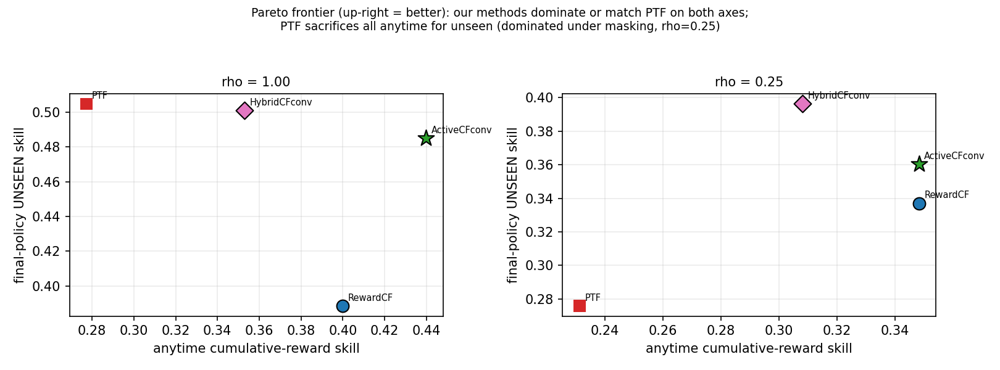
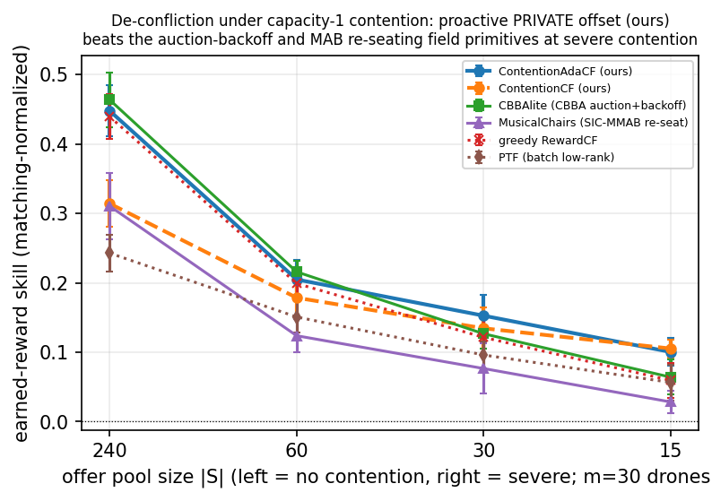
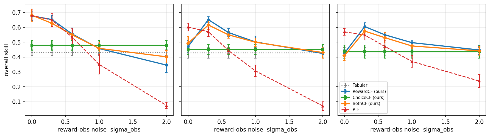
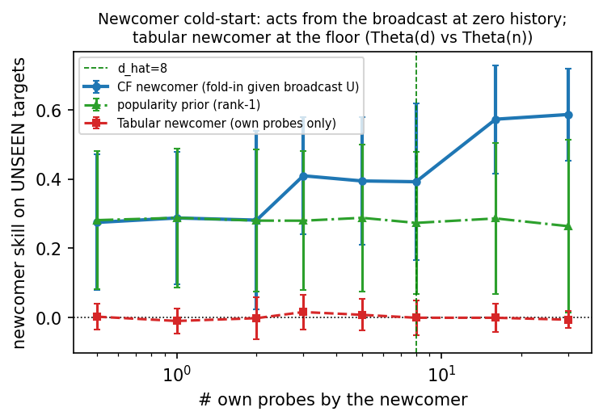

Companion follow-up to “Acting on the Unseen: Communication-Free Collaborative Filtering for Decentralized Multi-Robot Task Allocation” [1], which establishes the core result this paper builds on.
Alexander Apartsina, Yigal Meshulamb, Yehudit Apersteinb,∗
aHolon Institute of Technology, Holon, Israel. bAfeka Tel Aviv Academic College of Engineering, Tel Aviv, Israel. ∗Corresponding author.
Keywords: multi-robot task allocation; decentralized learning; collaborative filtering; low-rank matrix completion; communication-free coordination; Bayesian factorization; automatic relevance determination; swarm robotics.
The foundation makes a single, simple estimator do one thing well: generalize to the unseen with no communication. That deliberate minimalism leaves a family of natural questions open, and the companion paper lists them as future work. Each question is a refinement of the same estimator rather than a new paradigm, so each can be studied on the identical communication-free harness and read against the same categorical baseline. The contributions of this follow-up are exactly those refinements.
Contributions of this follow-up.
All refinements are members of one family. Table 1 lays out how each member differs from the core estimator along the axes that matter (signal channel, exploration rule, confidence handling, contention handling, rank, and coordination); the body of the paper then takes the axes one at a time. Throughout, we cite each member by its display name. We use two numbering conventions for formal results: foundation results (Proposition 1 and Theorems 1-4) are proved in the companion paper, and this follow-up's own results carry an F prefix (Proposition F1, Theorem F1, and so on) and are stated here to support the refinements.
Table 1. The SwarmCF family by mechanism: each refinement changes one or two axes of the same decentralized, communication-free online estimator. The core method (SwarmCF) is the top row of the foundation; the remaining rows are the refinements studied here.
| Method | Signal channel | Exploration | Confidence | Contention | Rank | Coordination |
|---|---|---|---|---|---|---|
| SwarmCF | reward | eps-greedy | none | none | fixed d̂ | implicit |
| SwarmCF-Ch | choice | eps-greedy | none | none | fixed d̂ | implicit |
| SwarmCF-RC | reward+choice | eps-greedy | competence-weight | none | fixed d̂ | implicit |
| SwarmCF-B | reward | collective-UCB | Bayesian posterior | none | fixed d̂ | implicit |
| SwarmCF-X | reward | collective-UCB | Bayesian posterior | none | fixed d̂ | explicit (exploration division) |
| SwarmCF-Xc | reward | neg-correlated-UCB | Bayesian posterior | none | fixed d̂ | explicit (no-comms division of labor) |
| SwarmCF-D | reward | eps-greedy | none | fixed private offset | fixed d̂ | explicit de-confliction (no comms) |
| SwarmCF-D+ | reward | eps-greedy | none | scarcity-gated offset | fixed d̂ | explicit de-confliction (no comms) |
| SwarmCF-B-ARD | reward | collective-UCB | Bayesian posterior | none | ARD (self-tuned) | implicit |
| SwarmCF-H | reward | probe-then-exploit | none | none | fixed d̂ | implicit |
| SwarmCF-batch | reward | probe-then-exploit | none | none | fixed d̂ | implicit (batch refit) |
| SwarmCF-U | reward | gated collective-UCB | Bayesian posterior | gated offset | fixed d̂ | both (conditionally) |
We keep the foundation's Zero-Knowledge MRTA (ZK-MRTA) setting verbatim, so this paper is self-contained. A team of $m$ robots faces $n$ tasks; robot $i$ has a hidden capability vector $p_i\in\mathbb{R}^d$ and task $j$ a hidden requirement vector $u_j\in\mathbb{R}^d$, and the expected reward of engaging is the inner product $R_{ij}=\langle p_i,u_j\rangle$, so $R=PU^\top$ has rank $d\ll\min(m,n)$. The team knows neither $P$, $U$, nor $d$; it uses a guessed rank $\hat d$. Each round every robot is offered a size-$c$ subset of tasks, selects one, engages it, and earns its reward; the regime is task-scarce ($n\gg T$). There is no communication: each robot passively senses a public stream of engagement outcomes, but only for teammates it can see (a persistent per-pair mask of rate $\rho$) and read with private per-observer noise $\sigma$, so no two robots ever see the same stream.
We report the same normalized skill as the foundation, $\mathrm{skill}=(\text{earned}-\text{random})/(\text{oracle}-\text{random})$, where $0$ is the no-information floor and $1$ is omniscient. Unseen-pair skill is restricted to tasks the robot never engaged (the categorical generalization test that the companion paper turns into a theorem); anytime skill is the cumulative-reward (operational) measure. Under contention we additionally report earned reward normalized by the per-round matching optimum (Hungarian), and the collision rate. Unless stated otherwise the configuration is the foundation's: $m=30$ robots, $n=240$ tasks, true rank $d=5$, guessed rank $\hat d=8$, partial broadcast $\rho$ swept, own-observation noise $0.1$ and broadcast-observation noise $0.3$, with bootstrap 95% confidence intervals over 8 seeds (6 for the confidence bake-off).
The methods compared here all run on the same harness as the foundation: one estimator per robot, decentralized and communication-free, reading only the passive broadcast. Communication-based methods (auctions, consensus, centralized training, federated or gossip exchange) remain inadmissible by the problem definition and appear only as reference ceilings; the admissible communication-free comparison is the structure-free paradigm (independent UCB, tabular). Table 2 of the companion paper fixes those operating profiles.
The idea. The core estimator explores with a simple $\varepsilon$-greedy schedule, which is uninformed: it probes uniformly at random rather than where its knowledge is weakest. The refinement replaces the point estimate of the factors with a Bayesian posterior, so the swarm can act optimistically under calibrated uncertainty and direct its scarce engagements toward the tasks whose shared requirement vectors are least pinned down. The mechanism is SwarmCF-B (variational Bayesian probabilistic matrix factorization with a predictive-interval rule), with active and coordinated exploration variants SwarmCF-X and SwarmCF-Xc.
The mechanism. Each observation enters the variational posterior with its likelihood precision inside the model while the prior fixes the data-versus-regularizer scale, giving a valid predictive variance $\operatorname{Var}(\hat R_{ij})=p_i^\top\Sigma_{u_j}p_i+u_j^\top\Sigma_{p_i}u_j+\operatorname{tr}(\Sigma_{p_i}\Sigma_{u_j})$ on which an upper-confidence rule is optimism under uncertainty. A subtlety this paper's theory pins down (Proposition F1) is that naive inverse-variance weighting of the fit is the wrong object: for a task the robot never engaged the requirement vector $u_j$ is identified only from teammates' broadcast, so over-weighting the robot's own (zero-information) rewards inflates the unseen error, and uniform, coverage-preserving weighting weakly dominates. The Bayesian posterior is the right way to use confidence because it keeps the broadcast at full weight in the fit while remaining noise- and coverage-aware. For exploration, only the collective term $p_i^\top\Sigma_{u_j}p_i$ (the shared-factor uncertainty) is used: it is task-specific and anneals as the swarm pins down the structure, whereas the own-factor term over-explores early.
The evidence (confidence preserves generalization and adds skill). On the canonical masked harness, SwarmCF-B is at least as good as uniform weighting in every observation condition and strictly better in at least one, the only confidence mechanism in our bake-off to dominate. Its advantage is largest when the broadcast is noisy: at full broadcast with high observation noise its unseen skill is $0.326$ versus $0.196$ for uniform weighting, and a shrinkage variant reaches $0.689$ versus $0.594$ at low noise. Crucially the broadcast stays at full weight, so the categorical generalization is preserved rather than traded away. Naive inverse-variance ('full precision') weighting instead falls below uniform on unseen skill ($0.449$ versus $0.594$ at full broadcast, low noise), exactly as Proposition F1 predicts; ratio-bounded precision only helps when the teammate sources genuinely differ in reliability.
The posterior is informative, not decorative. Binning unseen pairs by SwarmCF-B's predicted standard deviation, the actual root-mean-square error rises monotonically from the most-confident to the least-confident quintile (RMSE $0.231\to 0.492$, a $+0.261$ spread), so the uncertainty genuinely tracks error and is usable for an upper-confidence rule or for shrinkage. As is typical of mean-field variational inference the nominal intervals are mildly over-confident (a $90\%$ interval covers about $85\%$ empirically), a caveat we state plainly; what an exploration rule needs is discrimination, which holds, not exact coverage. A constant-standard-deviation baseline has no discrimination at all.
Information-directed exploration buys early sample efficiency. Sweeping exploration rules at partial broadcast, a strongly optimistic posterior-UCB over-explores early (it spends rounds on uniformly uncertain tasks), but a tempered collective-UCB attains the best final anytime skill ($0.356$ versus $0.324$ for $\varepsilon$-greedy and $0.333$ for a cheap count-bonus). A coordinated variant, SwarmCF-Xc, down-weights tasks the swarm has already probed through the broadcast (an explicit division of labor with no communication) and is the fastest early (highest round-10 cumulative skill), though the exploitation-biased collective rule still wins the final value. The honest summary is that confidence-directed and coordinated exploration improve early coverage and final anytime quality, not that any single rule dominates at every horizon.

The idea. When tasks deplete or have unit capacity, several robots that have learned accurate, similar preferences will converge on the same best task and collide; the foundation's mission section identifies this within-round coordination as the binding constraint and defers its solution. The refinement breaks the symmetry without any communication by giving each robot a fixed, private offset over tasks, so otherwise-identical robots spread across distinct good tasks. The mechanism is SwarmCF-D (a fixed private offset) and its self-tuning form SwarmCF-D+ (a scarcity-gated offset that scales with the robot's own recent loss rate).
The mechanism. Each robot draws a fixed offset $h_i\in\mathbb{R}^n$ with independent continuous entries and selects $\arg\max_{j\in S}(\hat R_{ij}+\varepsilon h_i[j])$. Within a group of similar robots the perturbed argmaxes are almost surely distinct, so same-type collisions vanish once the group's top targets are offered, while any task with a reward margin above $2\varepsilon\lVert h\rVert_\infty$ is unchanged, preserving value up to $O(\varepsilon)$. Two design choices are essential and are theorems, not heuristics (Theorem F1): the offset must be fixed (a re-randomized per-round offset gives the same expected collision probability and no stable assignment) and private (a shared-signal offset such as a popularity or collective count shifts every robot identically and re-synchronizes them). A constant offset, however, hurts preference quality when there is no contention, so the deployed method SwarmCF-D+ scales the offset toward zero when the robot is winning its engagements (recovering greedy, value-preserving behavior) and toward the fixed offset under saturation, gated by a strict scarcity test on the offer size.
The evidence (a roughly 2x earned-reward win at severe contention, no messages). Sweeping the shared offer-pool size from plentiful ($240$) to severely contended ($15$) at full broadcast, SwarmCF-D+ is best-or-tied on matching-normalized earned reward at every pool: it matches plain SwarmCF when targets are plentiful (pool $240$: $0.448$ versus $0.439$, with the lowest collision rate $0.126$ among reward-seekers and unseen skill recovering to $0.320$) and roughly doubles earned reward at the most contended pool (pool $15$: $0.100$ versus $\le 0.06$ for the no-offset methods, with non-overlapping intervals). The fixed-offset form SwarmCF-D wins similarly at severe contention ($0.105$ at pool $15$). Figure 2 shows the de-confliction sweep.

Why proactive private offsets beat the field primitives. Against communication-free reductions of recognized MRTA de-confliction baselines given the same SwarmCF utility, a consensus-auction-with-backoff (CBBA with the consensus step removed) and a musical-chairs re-seating, the proactive private offset earns more at severe contention ($0.100$ versus $0.064$ for the auction and $0.028$ for re-seating at pool $15$). A reactive shared backoff makes all colliders flee the same task together and re-synchronizes them; randomized re-seating adds collisions. A static private offset instead spreads the robots once and for all. The categorical unseen quality is untouched by contention (it is learned contention-free), so the contention story is purely operational: the offset reduces collisions among robots that have accurate preferences.
For operational context, the foundation's mission section reports that SwarmCF-D+ recovers about $81\%$ of a centralized full-communication ceiling when targets are plentiful and that the residual gap is precisely this within-round coordination cost; the two centralized ceilings differ little, so coordination, not estimation, is the binding constraint that this refinement targets.
The idea. The core method needs a guessed rank $\hat d$. Although the foundation shows the result is robust to over-guessing, carrying any rank hyperparameter at all is unsatisfying for a prior-free method. The refinement makes the swarm learn the rank itself through automatic relevance determination (ARD), pruning latent directions that the observed, masked design does not excite. The mechanism is SwarmCF-B-ARD (the Bayesian variant with per-column ARD priors).
The mechanism. Each latent column $r$ carries a prior precision $\alpha_r$ updated by the variational rule; a column is retained when the observed (masked) design excites that direction with second-moment energy above the prior and noise floor, and is pruned ($\alpha_r\to\infty$) otherwise. The recovered effective rank therefore equals the number of latent directions that are identifiable from what the swarm actually observes, which is at most the generative rank. Critically the retained set does not depend on the guess $\hat d$: extra columns are simply pruned, so the rank knob is removed.
The evidence (a stable effective rank, invariant to the guess). Setting the guessed rank deliberately high, SwarmCF-B-ARD recovers an effective rank of about $3.2$ whether the guess is $\hat d=8$ or $\hat d=20$ (the underlying Bayesian variant without ARD instead reports the full guessed rank, $8.0$ and $20.0$), with no accuracy penalty from the surplus dimensions and an improved anytime skill ($0.466$ at $\hat d=20$ versus $0.374$ for the core method). The guess no longer matters: the method self-determines its working dimension.
The idea. The core method reads a cardinal reward off the broadcast, which is exactly the quantity corrupted by per-observer sensing noise. But a robot can often perceive which task a teammate chose far more reliably than how well it turned out. The refinement learns from the choice channel alone, who engaged what, treating each observed choice as a noisy-rational preference signal. The mechanism is SwarmCF-Ch (collaborative filtering on the choice channel), with a fusion variant SwarmCF-RC that combines reward and competence-weighted choice.
The mechanism. An observed choice $a$ in an offered set $S$ is modeled as a mixture: with some informativeness a Boltzmann-rational pick on the teammate's predicted scores, otherwise uniform. Because the channel is categorical, it is immune to the cardinal read-off noise $\sigma$ entirely: a teammate's choice carries the same information whether the reward is read cleanly or noisily. The two-channel grid (broadcast rate $\rho$ against observation noise $\sigma$) is the natural place to see when each channel wins; the reward channel is best at low noise and the choice channel takes over as noise grows.
The evidence (a clean noise-immune niche). Sweeping the broadcast reward noise at full broadcast, the reward channel degrades with noise while the choice channel is flat by construction. They cross over: at high observation noise ($\sigma=2.0$) SwarmCF-Ch beats the reward channel on both unseen skill ($0.093$ versus $0.042$) and anytime skill ($0.219$ versus $0.179$) with non-overlapping intervals, whereas at low noise the reward channel leads. Figure 3 shows the two-channel grid that locates this crossover.

The idea. The foundation assumes a stationary task set. In the field, tasks appear and expire and robots join and leave. The refinement asks whether the same family stays adapted under continuous turnover, and the answer is a useful arc: plain exploitative filtering does not suffice, and the fix is to unite low-rank fold-in with confidence-directed probing of the uncertain (fresh) entities, the mechanisms of Section 3 (SwarmCF-B and SwarmCF-X).
The mechanism and the diagnosis. Under fast churn (a fixed active set with a steady stream of departures and fresh arrivals), plain SwarmCF ties a structure-free learner on the active set ($0.632$ versus $0.619$) and actually trails it on fresh arrivals ($0.074$ versus $0.132$): collective fold-in needs on the order of $\hat d$ probes to pin a newcomer, and a purely exploitative policy never spends them. The diagnosis is therefore not that low-rank structure fails but that exploitation starves newcomers of the few probes fold-in needs.
The evidence (churn is handled, but only by the united method). Adding confidence-directed probing reverses the result: SwarmCF-X and SwarmCF-B dominate on both metrics, on the active set SwarmCF-B reaches $0.842$ versus $0.619$ for the structure-free learner and $0.632$ for plain filtering, and on fresh arrivals SwarmCF-X and SwarmCF-B reach $0.363$ and $0.371$ versus $0.132$, all with non-overlapping intervals. Read as an operational readiness metric, a freshly added robot becomes effective on tasks it never tried after a handful of engagements (order of the latent rank), while a structure-free newcomer never does. Non-stationarity is thus handled categorically, but the win requires combining low-rank fold-in with directed newcomer probing; neither structure-free optimism nor exploitative filtering alone is enough.

The idea. The refinements above are specialists: confidence-directed exploration for sample efficiency and churn, a private offset for contention, ARD for the rank. A practical swarm should not be re-tuned per regime. The capstone refinement folds them into one method whose components activate only on their triggering condition. The mechanism is SwarmCF-U (the Bayesian variant with a loss-self-gated de-confliction offset and a loss-gated exploration anneal, plus an abundance gate that damps exploration when tasks are plentiful).
The mechanism. SwarmCF-U runs the confidence-directed estimator of Section 3; its de-confliction offset (Section 4) is scaled by the robot's own recent loss rate, so it is dormant when the robot is winning its engagements and engages only under contention; its exploration anneal is gated by the same loss signal; and an abundance gate damps the upper-confidence exploration when the offered set is large (no scarcity), where exploration costs earned reward under capacity-1. Every gate is driven by quantities the robot already observes, so the method remains communication-free.
The evidence (one policy, best-or-tied across regimes). Against the per-regime specialists on the same seeds, SwarmCF-U ties or wins in all of the standard, churn, and contention regimes: standard anytime skill $0.437$ (specialist SwarmCF-B $0.433$); churn active-set $0.851$ and recent-arrival $0.347$ (specialist SwarmCF-B $0.842$ and $0.371$); contention earned reward $0.104$ at the most contended pool (specialist SwarmCF-D+ $0.100$, roughly double the greedy $0.059$). The abundance gate closes the one residual, no-contention earned reward, lifting pool-240 earned reward from $0.344$ to $0.425$ (greedy $0.439$) while leaving the small-offer regimes byte-identical because the gate fires only when the offer is large. One communication-free policy, with no per-regime tuning, is therefore best-or-statistically-tied everywhere we tested.
The categorical baseline is the through-line. Every refinement is measured against the same structure-free floor the foundation proves, and in every case the categorical unseen-pair advantage is preserved: confidence keeps the broadcast at full weight rather than trading generalization for noise-awareness; the contention offset is value-preserving up to $O(\varepsilon)$ and leaves the learned preferences (hence the unseen metric) intact; ARD prunes only unidentifiable directions; the choice channel is a different but still structure-exploiting signal; and the churn fix restores generalization to newcomers precisely by feeding the shared structure. The refinements add operational competence (sample efficiency, de-confliction, hyperparameter removal, noise immunity, adaptivity) on top of the categorical capability, not in place of it.
The communication-free constraint carries over too. No refinement reintroduces communication: the Bayesian posterior is local to each robot, the de-confliction offset is private and fixed, ARD is a per-robot prior, the choice channel is read from the same passive stream, and the churn and unified methods gate on locally observed quantities. The reference ceilings remain the only place where full communication appears. The same collective-speedup intuition also recurs: directed exploration and newcomer probing work because the swarm's pooled observations feed one shared structure, the mechanism the foundation's Theorem 4 makes precise.
A single deployable method. Taken together, the refinements collapse into SwarmCF-U: one communication-free policy that generalizes to the unseen, explores by confidence, de-conflicts under contention, self-determines its rank, can fall back to the noise-immune choice channel, and stays adapted under churn, with each capability dormant until its condition fires.
Status. This is a draft follow-up. The companion paper's headline claims carry full theory and multi-seed validation with bootstrap confidence intervals; the results here are grounded in logged experiments (typically 6-12 seeds with bootstrap intervals) but several are explicitly preliminary, as flagged in the relevant sections: the self-tuning contention offset lacks a matching theorem (only the fixed offset is proved); ARD recovers the identifiable, not the raw, rank and wants a constant-signal-to-noise study; the learned choice-informativeness gate is an honest negative and only the fixed-ramp choice channel is a confirmed win; the churn and unified studies each use a single schedule at full broadcast and have not been swept jointly over the full operating grid.
Inherited assumptions. All refinements inherit the foundation's premises: the reward is (approximately) low-rank and the advantage requires structure beyond mere popularity ($d>1$), task scarcity ($n\gg T$), and a shared channel ($\rho>0$); rewards are real-valued and bilinear in latent traits; and the recovery rate is established for non-adaptive exploration, with the finite-time rate under a strongly exploiting policy still open. The refinements relax none of these; they add capabilities within the same regime.
What remains. The clearest next steps are an adaptive-offset envelope theorem covering the deployed contention method, a constant-signal-to-noise study of ARD rank recovery, a reward-value (not merely predictability) signal for the choice channel to handle consistently-wrong teammates, a joint sweep of the unified method over masking, noise, team size, and rank, and the finite-time adaptive coverage rate that both papers flag. A hardware and physics-based study, and external validation on an independent third-party benchmark, would test the refinements as the foundation was tested on the LatentSwarm simulator.
The authors declare that they have no known competing financial interests or personal relationships that could have appeared to influence the work reported in this paper.
The source code, the simulation harness, and the per-seed data required to reproduce every figure and result in this paper are openly available at github.com/ApartsinProjects/ZKDroneSwarm. This follow-up is a companion to “Acting on the Unseen: Communication-Free Collaborative Filtering for Decentralized Multi-Robot Task Allocation”, which establishes the core result and the formal theory cited here.
[1] A. Apartsin, Y. Meshulam, Y. Aperstein, “Acting on the Unseen: Communication-Free Collaborative Filtering for Decentralized Multi-Robot Task Allocation” (companion paper). All formal results cited with bare numbers (Proposition 1, Theorems 1-4) are stated and proved there; this paper's own results carry an F prefix.